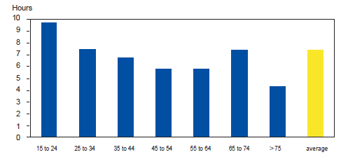
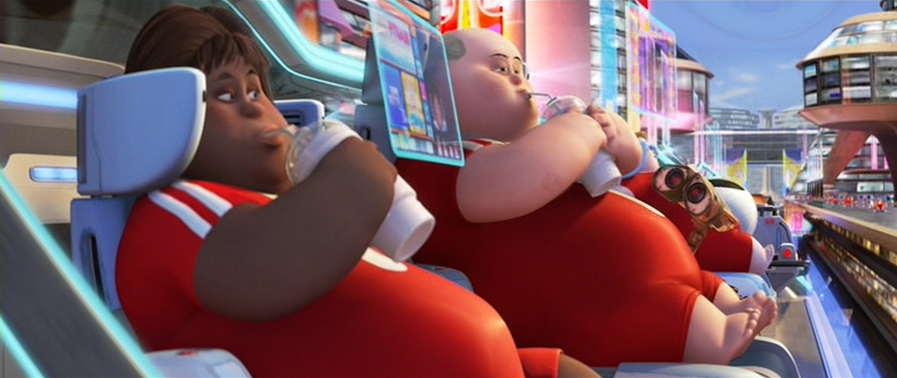

Time on technology
On average we spend 7 hours a day on technology this is unhealth from a mental and physical standpoint.

If we do not limit ourselves
If we dont stop using technology the way we are now this could be us. No one wants that!

Also many Mental Health risks not just Physical Health risks
Its not just the physical health risks its also the mental ones that hurt us.